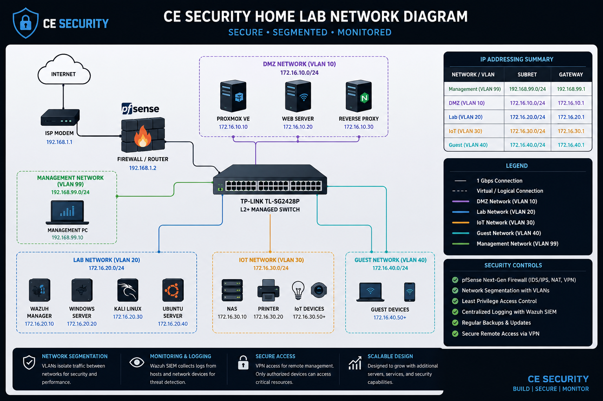

Lab Status
Operational
CE Security Operations
Cybersecurity Home Lab
Building practical SOC analyst skills through attack simulation, centralized monitoring, alert investigation, incident response, and technical documentation.
Core Systems
Deployed
Wazuh Agents
Active
Investigations
Documented
Lab Overview
Hands-On Security Operations Environment
I built this cybersecurity home lab to gain practical experience beyond classroom instruction. The environment allows me to simulate attacks, monitor endpoint activity, investigate security alerts, and document incidents using workflows similar to those used in a Security Operations Center.
The current environment is hosted in Oracle VirtualBox on a Windows 11 workstation. Wazuh provides centralized security monitoring, Kali Linux is used to generate controlled attack activity, and Ubuntu and Metasploitable2 serve as monitored or vulnerable targets.
Each project is designed to strengthen my ability to identify suspicious behavior, review supporting evidence, assess risk, map activity to MITRE ATT&CK, and produce professional incident documentation.
Network Architecture
Secure, Segmented, and Monitored Design
This diagram illustrates the target architecture for the lab as it expands from a single VirtualBox host-only network into a segmented security environment.

Current Environment vs. Expansion Design
The active lab currently operates on the 192.168.56.0/24 VirtualBox host-only network. The VLANs, pfSense firewall, managed switch, DMZ, IoT segment, and guest network shown above represent the planned expansion architecture.
Active Environment
Current VirtualBox Topology
These are the systems currently deployed and used for security monitoring, attack simulation, and investigation.
Host System
Windows 11
VirtualBox Hypervisor
Virtual Network
192.168.56.0/24
Host-Only Network
Security Systems
Wazuh + Endpoints
Detection and Analysis
Online
Wazuh Manager
SIEM and Security Monitoring
- Hostname
- WAZUH
- IP Address
- 192.168.56.103
- Platform
- Ubuntu Server
- Monitoring
- Manager System
Collects endpoint telemetry, generates security alerts, and supports investigation of authentication, privilege-escalation, and system activity.
Online
Kali Linux
Attack Simulation Workstation
- Hostname
- KALI01
- Network
- 192.168.56.0/24
- Platform
- Kali Linux
- Monitoring
- Wazuh Agent
Generates controlled offensive-security activity, including scanning, SSH authentication attempts, and Metasploit-based testing.
Online
Ubuntu Endpoint
Monitored Linux Target
- Hostname
- LINUX01
- Network
- 192.168.56.0/24
- Platform
- Ubuntu Linux
- Monitoring
- Wazuh Agent
Provides Linux authentication, account-management, sudo, privilege-escalation, and SSH telemetry for security investigations.
Isolated
Metasploitable2
Intentionally Vulnerable Target
- Hostname
- METASPLOITABLE2
- Network
- 192.168.56.0/24
- Platform
- Linux
- Monitoring
- No Agent
Used as a controlled vulnerable system for exploitation, service enumeration, attack-path testing, and offensive security practice.
Security Operations
Investigation Workflow
Lab exercises follow a repeatable SOC-style process from attack simulation through final documentation.
Simulate
Generate controlled attack behavior using Kali Linux, command-line tools, or Metasploit.
Detect
Review alerts and endpoint telemetry generated by Wazuh and the monitored operating system.
Investigate
Correlate users, hosts, timestamps, commands, network activity, and related security events.
Assess
Determine scope, severity, likely impact, and whether the activity requires containment or escalation.
Map
Associate observed behavior with applicable MITRE ATT&CK tactics and techniques.
Document
Produce a professional incident report containing evidence, findings, remediation, and lessons learned.
Technology Stack
Tools and Platforms
Wazuh SIEM
Centralized alerting, endpoint monitoring, log analysis, and security-event investigation.
Kali Linux
Network reconnaissance, controlled attack simulation, vulnerability testing, and validation.
Ubuntu Linux
Linux administration, authentication analysis, account activity, and privilege monitoring.
Metasploit
Controlled exploitation and testing of vulnerable services within an isolated environment.
VirtualBox
Virtual-machine deployment, network isolation, snapshots, and lab-environment management.
Cisco Packet Tracer
Network design, topology planning, device placement, and future segmentation modeling.
MITRE ATT&CK
Classification of attacker behavior using recognized tactics, techniques, and procedures.
GitHub Pages
Publication of incident reports, technical projects, lab documentation, and portfolio content.
Demonstrated Capabilities
Skills Developed Through the Lab
SIEM Monitoring
Alert Triage
Log Analysis
Incident Response
Linux Security
Network Analysis
Threat Detection
MITRE ATT&CK Mapping
Vulnerability Assessment
Attack Simulation
Risk Assessment
Technical Documentation
Portfolio Investigations
Security Cases Built From the Lab
Linux Privilege Escalation
Investigation of sudo activity, new account creation, root access, and password modification detected on a monitored Ubuntu endpoint.
View Investigation →SSH Brute Force Detection
Analysis of repeated SSH authentication failures from a Kali Linux source against a monitored Ubuntu target.
View Investigation →Development Roadmap
Planned Lab Expansion
The environment will continue evolving as new security controls, operating systems, and monitoring platforms are introduced.
Completed
Wazuh SIEM Deployment
Deploy the Wazuh manager and connect monitored Linux endpoints.
Completed
Attack Simulation Environment
Configure Kali Linux and Metasploitable2 for isolated offensive-security exercises.
In Progress
Alert Tuning and Investigation Library
Reduce unnecessary alert noise and expand the collection of documented SOC investigations.
Planned
Suricata IDS Integration
Add network intrusion detection and correlate network alerts with Wazuh endpoint telemetry.
Planned
pfSense and VLAN Segmentation
Introduce firewall policy enforcement and separate management, lab, DMZ, IoT, and guest networks.
Planned
Windows and Active Directory
Add Windows endpoints and domain services for identity, authentication, and lateral-movement investigations.
CE Security Portfolio
See the Lab in Action
Review the incident investigations created from controlled activity inside this environment.